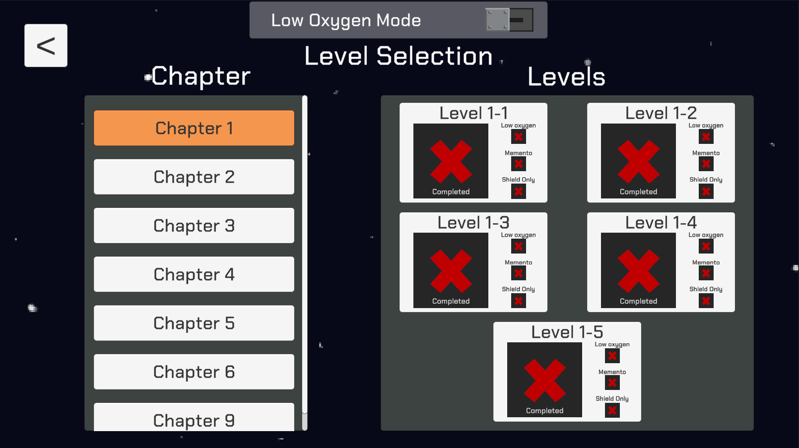
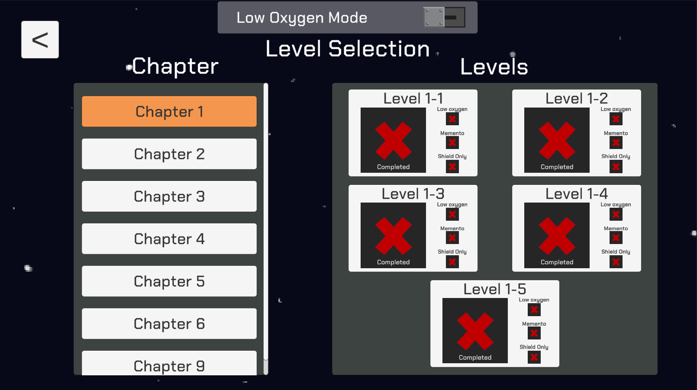

Phoenix one is a puzzle-action platformer with a focus on a unique ricochet mechanic. This game was made collaborating with other game development students over the course of a year at university. Nearing it's completion, a playable demo is available on itch.io.
My Contributions:
- Producer Role
- Documented team tasks via Trello/Discord to keep project within scope
- QA
- Performed QA for each major milestone, documenting and fixing bugs along the way
- Enemy
- Implemented the basic enemy and generic functionality and assisted with more complex enemies
- Controller
- Implemented and tested controller support using Unity's new input system
- UI
- Created the level select screen and helped create and design other UI screens and functionality
- Audio
- Implementing code to handle audio
- Sourcing and modifying copyright-free sound effects using Audacity
- Playtesting
- Conducted playtests and recorded data for analysis
 
